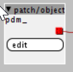
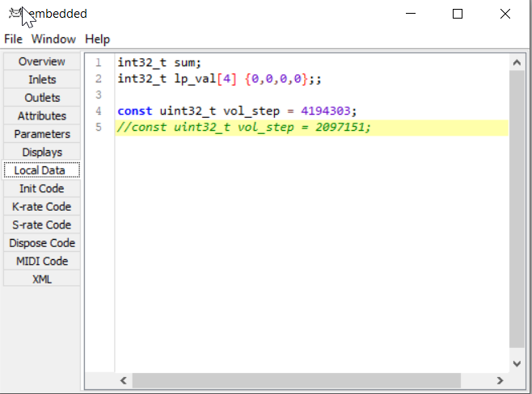
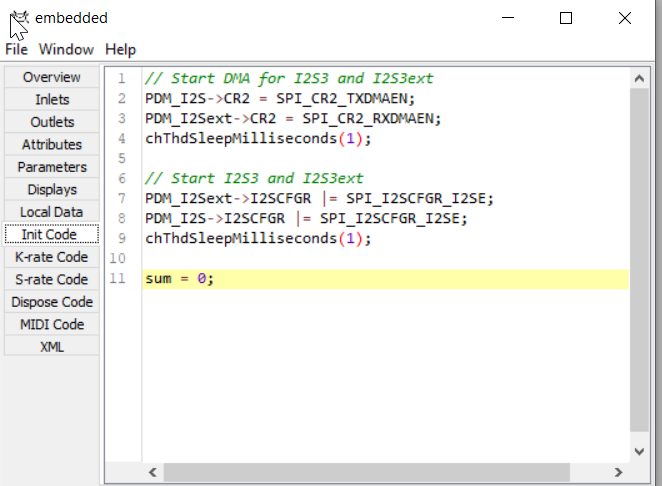
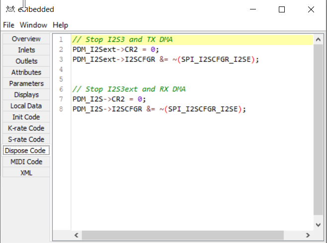

I have made a first attempt to include the PDM microphone on the Noloti into the firmware.
In short, we are receiving the microphone's bitstream at 3.072 MHz from I2S3 (which is basically SPI3) via DMA into a buffer of 32 uint32_t, called "pdm_inbuf[32]". 3.072MHz divided by 64 equals 48kHz. This buffer is made directly available in any custom object.
Some registers have to be written in the Init Code to enable the clock and DMA and such, since I only want these to be on if an object actually uses the PDM microphone. (and ideally the registers should be turned back off in the Dispose Code)
Since I am not good at writing filters I get sound but very faint and with a high noise floor.
I even tried linking and using ST's dedicated static library for PDM (pdm2pcm) but it seems too much of a hassle to adjust everything to the overall Axoloti way of running processes.
Right now I am going through 32 samples and reading each 32bit sample bit by bit, and for each bit that is set a fixed amount will be added to the decimated "temp_sum". Then two temp_sums will be added together and that will become one of the 16-buffer 48kHz audio samples Axoloti expects.
The repetitive bit compare part of the code (if sample & 0x00000001 etc.) is taken from some "ZeroPDM" or so library code I found online. It looks weird not to do a for loop but you indeed save a lot of CPU by doing it this way.
I am assuming I need a running average that repeatedly reads chunks of 16 or 32 bits, then advances a few bits, then samples the shifted signal again, so that each bit is read multiple times, effectively low-pass filtering the stream.
I did try a version employing a sincfilter lookup table but it didn't sound very good either. I am guessing this is where the multiple count of each sample would come into play?
I am almost embarrased because all I do is 4-pole low pass filter the raw decimated signal with code I took out of the "lp1" factory object.
Does anyone here have experience in properly filtering a PDM bitstream?
Here is what I have so far:



{kind=link}
{kind=link}

{kind=link}